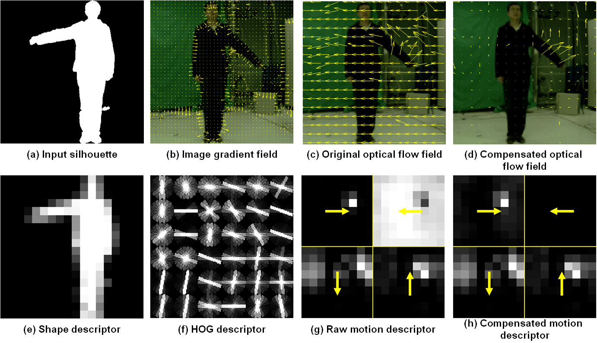

Recognizing Human Actions by Learning and Matching Shape-Motion Prototype Trees
Abstract:
A shape-motion prototype-based approach is introduced for action recognition. The approach represents an action as a sequence of prototypes for efficient and flexible action matching in long video sequences. During training, an action prototype tree is learned in a joint shape and motion space via hierarchical K-means clustering and each training sequence is represented as a labeled prototype sequence; then a look-up table of prototype-to-prototype distances is generated. During testing, based on a joint probability model of the actor location and action prototype, the actor is tracked while a frame-to-prototype correspondence is established by maximizing the joint probability, which is efficiently performed by searching the learned prototype tree; then actions are recognized using dynamic prototype sequence matching. Distance measures used for sequence matching are rapidly obtained by look-up table indexing, which is an order of magnitude faster than brute-force computation of frame-to-frame distances. Our approach enables robust action matching in challenging situations (such as moving cameras, dynamic backgrounds) and allows automatic alignment of action sequences. Experimental results demonstrate that our approach achieves recognition rates of 92.86 percent on a large gesture data set (with dynamic backgrounds), 100 percent on the Weizmann action data set, 95.77 percent on the KTH action data set, 88 percent on the UCF sports data set, and 87.27 percent on the CMU action data set.
Feature Extraction:
Examples of extracting the shape-motion descriptor from a test frame. (a) Input silhouette; (b) image gradient field; (c) raw optical flow field; (d) compensated optical flow field; (e) silhouette-based shape descriptor; (f) HOG-based shape descriptor; (g) motion descriptor computed from the raw optical flow field; (h) motion descriptor computed from the compensated optical flow field.

Keck Gesture Dataset:
The gesture dataset consisting of 14 different gesture classes, which are a subset of military signals. The following figure shows sample training frames of this dataset. The gesture dataset is collected using a color camera with 640 × 480 resolution. Each of the 14 gestures is performed by three people. In each sequence, the same gesture is repeated three times by each person. Hence there are 3 × 3 × 14 = 126 video sequences for training which are captured using a fixed camera with the person viewed against a simple, static background. There are 4 × 3 × 14 = 168 video sequences for testing which are captured from a moving camera and in the presence of background clutter and other moving objects.
Gesture Classes: 
Demo Video:
Downloads:
*All the materials provided here are only available for noncommercial reserach use.
All sequences are stored using AVI file format (MPEG V3-compressed version is available on-line). Uncompressed version is available on demand. There are 42 training video files and 56 testing video files. Each file contains about three subsequences used as a sequence in our experiments. The subdivision of each file into sequences in terms of start-frame and end-frame is given in:
- Sequences.txt
- Keck Gesture Dataset
- Background Subtraction for Training Set
- Bounding Boxes file for KTH Dataset
- Shape-motion Descriptor Extraction
If you happen to use the dataset or other files provided by this webpage, please cite one of the following papers:
- Zhe Lin, Zhuolin Jiang, and Larry S. Davis, "Recognizing Actions by Shape-Motion Prototype Trees, " IEEE 12th International Conference on Computer Vision (ICCV), pp.444-451, 2009. [pdf][slide]
- Zhuolin Jiang, Zhe Lin, and Larry S. Davis, "Recognizing Human Actions by Learning and Matching Shape-Motion Prototype Trees". IEEE Transactions on Pattern Analysis and Machine Intelligence, 2012, 34(3): 533-547. [pdf]
If you have any inquires or questions about this dataset, please contact:
Zhuolin Jiang (zhuolin@umiacs.umd.edu)
Latest update 08-08-2012